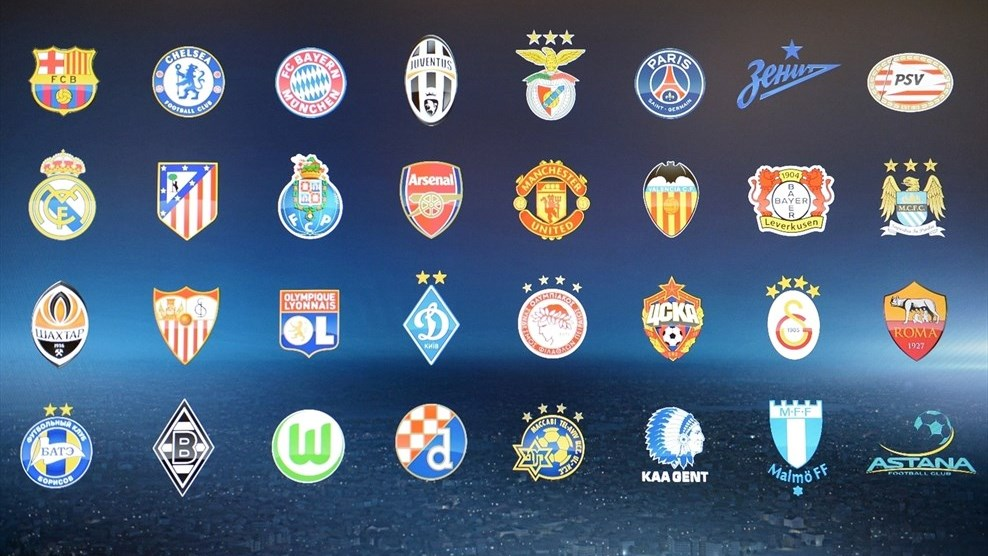

The UEFA Champions League is an annual continental club football competition organised by the Union of European Football Associations (UEFA) and contested by top-division European clubs. It is one of the most prestigious tournaments in the world and the most prestigious club competition in European football, played by the national league champion (and, for some nations, one or more runners-up) of each UEFA national association. The final of the 2012–13 tournament was the most watched UEFA Champions League final to date, as well as the most watched annual sporting event worldwide in 2013, drawing 360 million television viewers.
This is information has been taken from Wikipedia ..| Team | Records |
|---|---|
| Real Madrid, SP | Win 11 | RU 3 |
| Milan, IT | Win 7 | RU 4 |
| Bayern Munich, GER | Win 5 | RU 5 |
| Barcelona, SP | Win 5 | RU 3 |
| Liverpool, ENG | Win 5 | RU 2 |
Here are the rest of the best teams in the Europe

Designed by Meric BAL